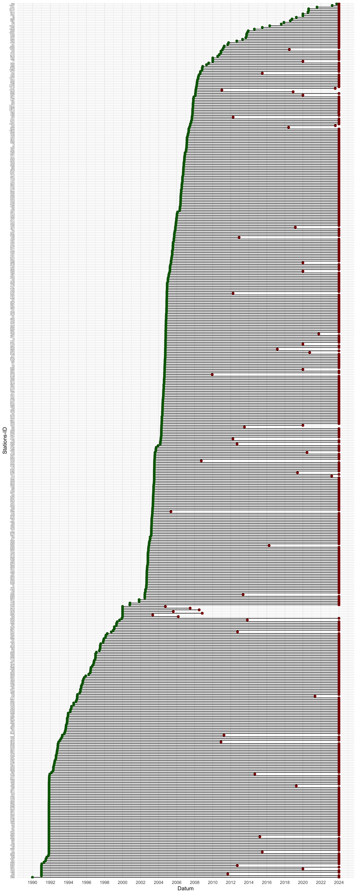

Code
suppressPackageStartupMessages({
library(rvest)
library(stringr)
library(httr)
library(dplyr)
library(readr)
library(lubridate)
library(fs)
library(purrr)
library(ggplot2)
})Tobias Straub
download source: https://opendata.dwd.de/climate_environment/CDC/observations_germany/climate/10_minutes/air_temperature/historical/
if (!file.exists("dwd_data")) {
# Basis-URL
base_url <- "https://opendata.dwd.de/climate_environment/CDC/observations_germany/climate/10_minutes/air_temperature/historical/"
# Zielverzeichnis
dir_create("dwd_data")
# 1. Scrape .zip-Dateien
zip_links <- read_html(base_url) %>%
html_elements("a") %>%
html_attr("href") %>%
str_subset("\\.zip$") %>%
paste0(base_url, .)
# 2. Herunterladen und entpacken
for (url in zip_links) {
zip_name <- basename(url)
zip_path <- file.path("dwd_data", zip_name)
txt_dir <- "dwd_data/unzipped"
# Nur herunterladen, wenn Datei nicht existiert
if (!file_exists(zip_path)) {
message("Lade: ", zip_name)
download.file(url, destfile = zip_path, mode = "wb")
}
# Entpacken
unzip(zip_path, exdir = txt_dir)
}
}if (!file.exists("all_data.rds")) {
# Zielspaltennamen (laut DWD-Doku)
col_names <- c("STATIONS_ID", "MESS_DATUM", "QN", "PP_10", "TT_10", "TM5_10", "RF_10", "TD_10")
safe_read <- function(file) {
tryCatch({
read_delim(
file,
delim = ";",
skip = 1,
col_names = col_names,
col_types = cols(.default = "c"), # alles als Char einlesen
locale = locale(decimal_mark = ".", grouping_mark = "", encoding = "UTF-8"),
trim_ws = TRUE
) %>%
mutate(source_file = basename(file))
}, error = function(e) {
message("Fehler beim Einlesen von: ", file, " → ", e$message)
NULL
})
}
convert_types <- function(df) {
df %>%
mutate(
STATIONS_ID = as.integer(STATIONS_ID),
MESS_DATUM = ymd_hm(MESS_DATUM),
QN = as.integer(QN),
PP_10 = na_if(as.numeric(PP_10), -999),
TT_10 = na_if(as.numeric(TT_10), -999),
TM5_10 = na_if(as.numeric(TM5_10), -999),
RF_10 = na_if(as.numeric(RF_10), -999),
TD_10 = na_if(as.numeric(TD_10), -999)
)
}
txt_files <- list.files("dwd_data/unzipped", pattern = "\\.txt$", full.names = TRUE)
#txt_files <- head(txt_files, 300)
# Schrittweise: Einlesen → Umwandeln → Zusammenfügen
all_data <- map(txt_files, safe_read) %>%
map(convert_types) %>%
bind_rows()
saveRDS(all_data, "all_data.rds")
} else {
all_data <- readRDS("all_data.rds")
}# A tibble: 10 × 10
STATIONS_ID MESS_DATUM QN PP_10 TT_10 TM5_10 RF_10 TD_10
<int> <dttm> <int> <dbl> <dbl> <dbl> <dbl> <dbl>
1 3366 1990-01-01 00:00:00 1 973. -4.4 -4 94 -4.6
2 3366 1990-01-01 00:10:00 1 972. -4.3 -3.9 94 -4.7
3 3366 1990-01-01 00:20:00 1 972. -4.4 -4 94 -4.7
4 3366 1990-01-01 00:30:00 1 972. -4.4 -4.1 94 -4.6
5 3366 1990-01-01 00:40:00 1 972. -4.5 -4.1 94 -4.8
6 3366 1990-01-01 00:50:00 1 972. -4.8 -4.2 94 -4.8
7 3366 1990-01-01 01:00:00 1 972. -4.7 -4.3 94 -4.9
8 3366 1990-01-01 01:10:00 1 972. -4.8 -4.5 94 -5
9 3366 1990-01-01 01:20:00 1 972. -4.9 -4.4 94 -5.1
10 3366 1990-01-01 01:30:00 1 972. -4.9 -4.4 94 -5.1
# ℹ 2 more variables: source_file <chr>, X9 <chr>Daten von wie vielen Stationen?
längster Messbereich
# A tibble: 1 × 4
STATIONS_ID erstes_datum letztes_datum tage
<int> <dttm> <dttm> <dbl>
1 3366 1990-01-01 00:00:00 2023-12-31 23:50:00 12418.Messperioden aller Stationen
# Daten aggregieren: Start- und Enddatum pro Station
messperioden <- all_data %>%
group_by(STATIONS_ID) %>%
summarise(
erstes_datum = min(MESS_DATUM),
letztes_datum = max(MESS_DATUM),
.groups = "drop"
)
# Sortierung für saubere Darstellung
messperioden <- messperioden %>%
arrange(erstes_datum) %>%
mutate(STATIONS_ID = factor(STATIONS_ID, levels = unique(STATIONS_ID)))# Plot: Gantt-ähnlich
ggplot(messperioden, aes(y = STATIONS_ID)) +
geom_segment(aes(x = erstes_datum, xend = letztes_datum,
yend = STATIONS_ID), linewidth = 0.5) +
geom_point(aes(x = erstes_datum), color = "darkgreen", size = 2) +
geom_point(aes(x = letztes_datum), color = "darkred", size = 2) +
labs(
x = "Datum", y = "Stations-ID"
) +
theme_minimal() +
theme(axis.text.y = element_text(size = 4)) +
scale_x_datetime(date_labels = "%Y", date_breaks = "2 years")
R version 4.4.3 (2025-02-28)
Platform: x86_64-apple-darwin20
Running under: macOS Sequoia 15.3.2
Matrix products: default
BLAS: /Library/Frameworks/R.framework/Versions/4.4-x86_64/Resources/lib/libRblas.0.dylib
LAPACK: /Library/Frameworks/R.framework/Versions/4.4-x86_64/Resources/lib/libRlapack.dylib; LAPACK version 3.12.0
locale:
[1] en_US.UTF-8/en_US.UTF-8/en_US.UTF-8/C/en_US.UTF-8/en_US.UTF-8
time zone: Europe/Berlin
tzcode source: internal
attached base packages:
[1] stats graphics grDevices datasets utils methods base
other attached packages:
[1] ggplot2_3.5.1 purrr_1.0.4 fs_1.6.5 lubridate_1.9.4
[5] readr_2.1.5 dplyr_1.1.4 httr_1.4.7 stringr_1.5.1
[9] rvest_1.0.4
loaded via a namespace (and not attached):
[1] gtable_0.3.6 jsonlite_1.9.1 compiler_4.4.3 renv_1.1.4
[5] tidyselect_1.2.1 xml2_1.3.8 scales_1.3.0 yaml_2.3.10
[9] fastmap_1.2.0 R6_2.6.1 generics_0.1.3 knitr_1.50
[13] tibble_3.2.1 munsell_0.5.1 pillar_1.10.2 tzdb_0.5.0
[17] rlang_1.1.5 utf8_1.2.4 stringi_1.8.7 xfun_0.51
[21] timechange_0.3.0 cli_3.6.4 withr_3.0.2 magrittr_2.0.3
[25] digest_0.6.37 grid_4.4.3 rstudioapi_0.17.1 hms_1.1.3
[29] lifecycle_1.0.4 vctrs_0.6.5 evaluate_1.0.3 glue_1.8.0
[33] farver_2.1.2 colorspace_2.1-1 rmarkdown_2.29 tools_4.4.3
[37] pkgconfig_2.0.3 htmltools_0.5.8.1